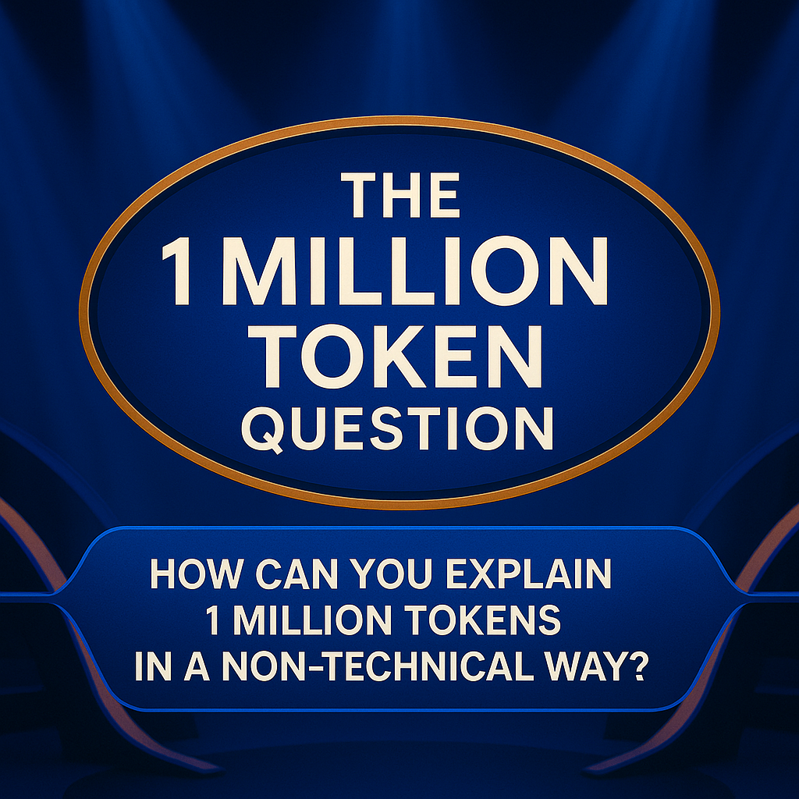

The Million-Token Question: What the Bible Teaches Us About LLM Pricing
tokenization
nlp
Author
Christian Wittmann
Published
June 1, 2025
In my previous blog post, I explored how different languages compare in terms of tokens per word. That analysis was based on Wikipedia articles and raised a few follow-up questions. In this blog post, let’s continue to explore tokenization to gain a more intuitive understanding and derive some real-world implications:
Does a higher tokens-per-word ratio actually cost more? Or do different languages naturally express the same content in fewer words, making the token ratio somewhat irrelevant when comparing meaning?
How much content is actually one million tokens? I named this the “million-token question” because 1 million tokens are a typical unit to set a price point, yet it’s surprisingly difficult to express 1 million tokens in real-world analogies.

The Million-Token Question
The plan for this post
With a bit of luck, I discovered that the content of the German Bible is almost the exact equivalent of one million tokens (using GPT-4o tokenizer o200k_base). Using this insight as our starting point, let’s tokenize several Bible translations. Here are the steps we’ll follow:
Download the Bibles and clean-up the content so that it only contains the plain text.
Count words and tokens
Calculate some interesting KPIs
As usual, this blog post is also available as a Jupyter Notebook, and you can run all the code yourself.
Reuse some code
Let’s start by defining some helper functions, which we will use later in the process. Please feel free to skip over this section if you are mainly interested in the results.
The code assumes that you have previously installed spaCy alongside the necessary language packages. In case you haven’t, please check out my previous blog post which explains how to install it.
Code
import tiktokendef get_encoder(encoding_name="o200k_base"):"""Returns a tiktoken encoder. Defaults to GPT-4/GPT-4o's tokenizer."""return tiktoken.get_encoding(encoding_name)def count_tokens(text: str, encoder=None) ->int:""" Counts the number of tokens in the input text using the specified encoder. If no encoder is provided, a new one will be created. """if encoder isNone: encoder = get_encoder()returnlen(encoder.encode(text))encoder = get_encoder()
Code
import spacyimport stringLANGUAGES = {"de": {"name": "German", "model": "de_core_news_sm", "emoji": "🇩🇪"},"en": {"name": "English", "model": "en_core_web_sm", "emoji": "🇺🇸"},"es": {"name": "Spanish", "model": "es_core_news_sm", "emoji": "🇪🇸"},"fr": {"name": "French", "model": "fr_core_news_sm", "emoji": "🇫🇷"},"it": {"name": "Italian", "model": "it_core_news_sm", "emoji": "🇮🇹"},"ja": {"name": "Japanese", "model": "ja_core_news_sm", "emoji": "🇯🇵"},"ko": {"name": "Korean", "model": "ko_core_news_sm", "emoji": "🇰🇷"},"pl": {"name": "Polish", "model": "pl_core_news_sm", "emoji": "🇵🇱"},"pt": {"name": "Portuguese", "model": "pt_core_news_sm", "emoji": "🇵🇹"},"ru": {"name": "Russian", "model": "ru_core_news_sm", "emoji": "🇷🇺"},"zh": {"name": "Chinese", "model": "zh_core_web_sm", "emoji": "🇨🇳"},}# Simple cache/dictionary to hold loaded spaCy models:_spacy_models = {}def get_spacy_model(language_code: str="en"):""" Loads and caches the spaCy language model for the given language code. Uses the model name defined in the LANGUAGES dict. Falls back to a blank model if the specified model is not available. """if language_code notin _spacy_models: model_name = LANGUAGES.get(language_code, {}).get("model", None)try:if model_name: _spacy_models[language_code] = spacy.load(model_name)else:raiseValueError(f"No model defined for language code: '{language_code}'")except (OSError, ValueError) as e:print(f"⚠️ Could not load model '{model_name}' for language '{language_code}': {e}")print("→ Falling back to blank spaCy model (basic tokenization only).") _spacy_models[language_code] = spacy.blank(language_code)return _spacy_models[language_code]def get_spacy_tokens(text: str, language_code: str="en") ->tuple[list[str], list[str]]:""" Tokenizes the input text using spaCy's tokenizer. Returns two lists: one with spaCy tokens (words) and one with omitted tokens (punctuation, spaces, symbols, etc.). """ nlp = get_spacy_model(language_code) doc = nlp(text) punctuation_set =set(string.punctuation) word_tokens = [ t for t in doc ifnot t.is_space andnot t.is_punct and t.pos_ !="SYM"and t.text notin punctuation_set ] omitted_tokens = [ t for t in doc if t.is_space or t.is_punct or t.pos_ =="SYM"or t.text in punctuation_set ]return word_tokens, omitted_tokensdef count_words_spacy(text: str, language_code: str="en") ->int:""" Counts words in the input text using spaCy's tokenizer. Skips punctuation/whitespace tokens. """ nlp = get_spacy_model(language_code) doc = nlp(text) punctuation_set =set(string.punctuation)# Filter out space/punctuation tokens: tokens = [ t for t in doc ifnot t.is_space andnot t.is_punct and t.pos_ !="SYM"and t.text notin punctuation_set ]returnlen(tokens)def get_tokens_per_word(text: str, language_code: str="en", encoder=None) ->float:""" Calculates average number of tokens (tiktoken) per word (spaCy-based) for the given text. """ words = count_words_spacy(text, language_code=language_code) tokens = count_tokens(text, encoder=encoder)if words ==0:return0.0return tokens / words
Code
def count_words_spacy_long(text, language_code="en", chunk_size=1000000):""" Counts words in large text by splitting it into chunks and using count_words_spacy. Parameters: text (str): The full text to be analyzed. language_code (str): Language code to pass to count_words_spacy. chunk_size (int): Size of each text chunk in characters (default: 1,000,000). Returns: int: Total word count. """ total_word_count =0for i inrange(0, len(text), chunk_size): chunk = text[i:i + chunk_size] word_count = count_words_spacy(text=chunk, language_code=language_code) total_word_count += word_countreturn total_word_count
Code
def read_text_file(file_path):""" Reads the full content of a plain text file. Parameters: file_path (str): Path to the text file. Returns: str: The content of the file as a single string. """try:withopen(file_path, 'r', encoding='utf-8') asfile: text =file.read()return textexceptFileNotFoundError:print(f"File not found: {file_path}")return""exceptUnicodeDecodeError:print("Error decoding file. Try using a different encoding, like 'latin-1'.")return""def analyze_text(text: str, language_code: str="en") ->dict:""" Analyzes the input text using spaCy and returns a dictionary with word count and token count. """ word_count = count_words_spacy_long(text, language_code=language_code) token_count = count_tokens(text, encoder=encoder) token_per_word = token_count / word_countreturn {"word_count": word_count, "token_count": token_count, "token_per_word": token_per_word}
Tokenizing the bible
Finding the full text of the bible in many languages was a bit tricky but Bible Super Search provides full downloads in many languages. Bible texts usually contain verse numbers, which could affect the word count. Therefore, I opted for the CSV versions, which contains several columns (Verse ID, Book Name, Book Number, Chapter, Verse, Text). This way I could extract only the raw text into separate text files.
The site offered more than one version for some languages. With ChatGPT’s help, I selected the most mainstream translations:
Chinese: Chinese Union (Simplified)
English: American Standard Version
French: Louis Segond 1910
German: Luther Bible (1912)
Italian: Diodati
Korean: Korean
Polish: Uwspółcześniona Biblia Gdańska
Portuguese: Tradução de João Ferreira de Almeida (Versão Revista e Atualizada)
Russian: Synodal
Spanish: Reina Valera 1909
Code
import osdef get_filenames_by_extension(extension: str) ->list[str]:""" Returns a list of filenames with the specified extension. """return [f for f in os.listdir('.') if f.endswith(extension)]csv_filenames = get_filenames_by_extension('.csv')csv_filenames
After the download, I converted the files to plain text:
Code
import csvfrom pathlib import Pathdef csv_to_plain_text(input_csv: str, output_txt: str, text_column: str="Text", encoding: str="utf-8") ->None:""" Convert a Bible CSV into a plain text file with one verse per line, skipping preamble lines before the actual header. """ input_path = Path(input_csv) output_path = Path(output_txt)with input_path.open(mode="r", encoding=encoding, newline='') as infile:# Read all lines and search for the header row lines = infile.readlines() header_line_idx =Nonefor i, line inenumerate(lines):# Try parsing this line as a CSV header headers = [col.strip() for col in line.split(',')]if text_column in headers: header_line_idx = ibreakif header_line_idx isNone:raiseValueError(f"Could not find a header line containing '{text_column}' in file {input_csv}")# Rewind file starting from the header line valid_csv = lines[header_line_idx:] reader = csv.DictReader(valid_csv)if text_column notin reader.fieldnames:raiseKeyError(f"Column '{text_column}' not found in CSV header: {reader.fieldnames}")with output_path.open(mode="w", encoding=encoding, newline='\n') as outfile:for row in reader: text = row[text_column].strip() outfile.write(text +"\n") # one verse per lineprint(f"Saved file: {output_path.name}")def get_text_file_name(filename: str) ->str:""" Given a filename, returns the same filename with a .txt extension. Example: "data.csv" -> "data.txt" """returnstr(Path(filename).with_suffix('.txt'))for csv_filename in csv_filenames: csv_to_plain_text(csv_filename, get_text_file_name(csv_filename))
We’ve completed all the preparation steps and can now start analyzing the texts. Let’s count both the tokens and the words to determine the tokens per word. Additionally, let’s normalize the tokens per word and the total number of tokens to English to not only see the tokens per word, but also the relative number of tokens per bible version.
def analyze_all_text_files(extension: str='.txt') ->list[dict]:""" Analyzes all text files with the given extension in the current directory. Returns a list of dictionaries, each containing: - language (derived from filename) - filename - word count - token count - tokens per word """ results = [] txt_filenames = get_filenames_by_extension(extension)for txt_filename in txt_filenames:print(f"Processing {txt_filename}...") # progress indicator text = read_text_file(txt_filename) language = txt_filename[:2].lower() metrics = analyze_text(text, language_code=language)print(f"Done: {metrics}") # show results briefly result = {"language": language,"filename": txt_filename,"word_count": metrics["word_count"],"token_count": metrics["token_count"],"tokens_per_word": metrics["token_per_word"] } results.append(result)return resultsresults = analyze_all_text_files()
Let’s visualize the results:
import pandas as pddef get_tokenization_dataframe(results: list[dict]) -> pd.DataFrame:""" Converts tokenization results into a pandas DataFrame with: - Flag - ISO code - Language name - Word count - Token count - Tokens per word - Tokens/Word relative to English - Total tokens as % of English tokens Sorted ascending by Tokens/Word. """# Use metadata from the shared LANGUAGES dictionarydef get_lang_info(code): entry = LANGUAGES.get(code, {})return entry.get("emoji", "🏳️"), entry.get("name", "Unknown")# Get English baseline values english_entry =next((entry for entry in results if entry["language"] =="en"), None)ifnot english_entry:raiseValueError("English ('en') entry not found in results.") english_tokens = english_entry["token_count"] english_tpw = english_entry["tokens_per_word"] rows = []for entry in results: lang_code = entry["language"] flag, language = get_lang_info(lang_code) tokens = entry["token_count"] tpw = entry["tokens_per_word"] rel_tpw = tpw / english_tpw percent_of_english = (tokens / english_tokens) *100 rows.append({"Flag": flag,"Code": lang_code,"Language": language,"Words": entry["word_count"],"Tokens": tokens,"Tokens/Word": round(tpw, 3),"Rel. Tokens/Word (vs EN)": round(rel_tpw, 2),"% of English Tokens": round(percent_of_english, 1), }) df = pd.DataFrame(rows) df = df.sort_values(by="Tokens/Word", ascending=True).reset_index(drop=True)return dfdef display_tokenization_table(df: pd.DataFrame) ->None: styled = df.style.format({"Tokens/Word": "{:.3f}","Rel. Tokens/Word (vs EN)": "{:.2f}","% of English Tokens": "{:.1f}" }).hide(axis="index") display(styled)df = get_tokenization_dataframe(results)display_tokenization_table(df)
Flag
Code
Language
Words
Tokens
Tokens/Word
Rel. Tokens/Word (vs EN)
% of English Tokens
🇺🇸
en
English
789712
997707
1.263
1.00
100.0
🇫🇷
fr
French
777811
1122594
1.443
1.14
112.5
🇪🇸
es
Spanish
700895
1027817
1.466
1.16
103.0
🇵🇹
pt
Portuguese
698762
1042425
1.492
1.18
104.5
🇩🇪
de
German
692385
1049296
1.515
1.20
105.2
🇨🇳
zh
Chinese
930597
1520085
1.633
1.29
152.4
🇮🇹
it
Italian
761788
1275774
1.675
1.33
127.9
🇷🇺
ru
Russian
563072
1102920
1.959
1.55
110.5
🇵🇱
pl
Polish
583927
1252059
2.144
1.70
125.5
🇰🇷
ko
Korean
464422
1240510
2.671
2.11
124.3
Conclusion: What the Bible Teaches Us About Tokenization
The results turned out to be even more interesting than I expected. We can observe that across the board, the token-per-word ratio for the bible is less than in my previous experiment with Wikipedia articles. I expected this result because the bible contains a lot less markup compared to wikipedia articles. While interesting, other findings stand out more significantly from my point of view.
First, we can now confidently say that the Bible answers the million-token question. For English, Spanish, Portuguese, and German, the total token count falls within just 5% of one million tokens. French and Russian also land close, within a 10% margin. Extending this range to about 25%, we can also include Korean, Polish, and Italian. Chinese is an outlier, but you might still think of it as a rough estimate. So next time you read the pricing of LLM tokens in dollars per million tokens, for example, $2.00 per 1M input tokens and $8.00 per 1M output tokens, you can imagine it costs $2.00 to read the bible and $8.00 to write the bible.
Here’s what actually surprised me: Although the tokens-per-word ratios vary substantially across languages (with Polish and Korean being particularly token-hungry), the total token counts across most languages are a lot closer. Once we normalize token counts relative to English, the variation shrinks, and a pattern emerges: Most languages convey the same biblical content using roughly the same number of tokens. This insight challenges the assumption that a higher token-per-word ratio necessarily means higher cost or verbosity. In fact, while languages differ in how many words they need to express an idea, those differences appear to balance out when viewed through the lens of token usage — except, again, in the case of Chinese.